Composition Operators
Infix Operators
Three infix operators provide concise spatial composition:
| Operator | Function | Axis | Precedence |
|---|---|---|---|
a | b | beside_x | x (side by side) | lowest |
a / b | beside_y | y (front to back) | middle |
a ^ b | above | z (stack vertically) | highest |
a | b | a / b | b ^ a |
|---|---|---|
 |  |  |
Precedence follows the architectural hierarchy: vertical stacking binds tightest, then depth, then width. This means:
a | b / c # parses as a | (b / c)
a / b ^ c # parses as a / (b ^ c)
a | b / c ^ d # parses as a | (b / (c ^ d))A four-room house combining all three axes:

Function Forms
beside / besidex / besidey
beside is the general form with an axis keyword:
beside(a, b; axis=:x) # same as beside_x(a, b)
beside(a, b; axis=:y) # same as beside_y(a, b)Both beside and above accept variadic arguments:
beside(a, b, c, d) # left-associative: ((a | b) | c) | d
above(f1, f2, f3) # left-associative: (f1 ^ f2) ^ f3Keyword arguments control alignment and wall sharing:
shared_wall=true— adjacent rooms share a single wall (default)align=:start— alignment when depths differ (:start,:center,:end)
Depth Mismatches
When two rooms of different depths are placed side by side, each keeps its exact dimensions. The building outline becomes stepped — no stretching, no void elements:
┌─────────┬───────┐
│ │kitchen│
│ living │3.5x3.0│
│ 5.0x4.0 ├───────┘
│ │ <- stepped facade
└─────────┘Repetition
repeat_unit stamps out copies along an axis with scoped namespaces:
repeat_unit(apartment, 4; axis=:x, mirror_alternate=true)
Each copy gets a namespace prefix (unit_1/, unit_2/, ...) to prevent id collisions. With mirror_alternate=true, even-numbered copies are mirrored.
Grid
grid creates a 2D array of rooms from a function:
offices = grid((r, c) -> room(Symbol("off_r\$(r)c\$(c)"), :office, 4.0, 5.0), 3, 5)
Cells can have different sizes — the layout uses each column's widest cell and each row's deepest cell, so a heterogeneous grid still places every cell at a consistent grid offset.
Transforms
scale(s, sx, sy)— scale dimensionsmirror_x(s)/mirror_y(s)— reflect
| scale | mirror_x |
|---|---|
 |  |
with_height(s, h)— override height for a subtreewith_props(s, nt)— merge aNamedTupleof props onto every placed space unders(existing per-room props win)tag_wall_family(s, :name)/tag_slab_family(s, :name)— shortcut forwith_propsthat marks a subtree for named-family lookup in downstream element generation.